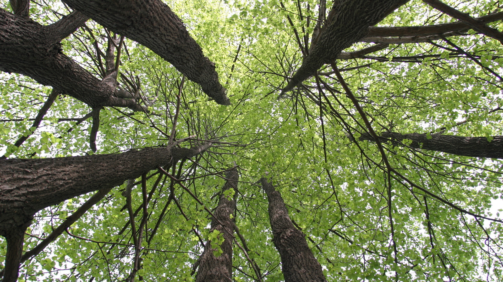
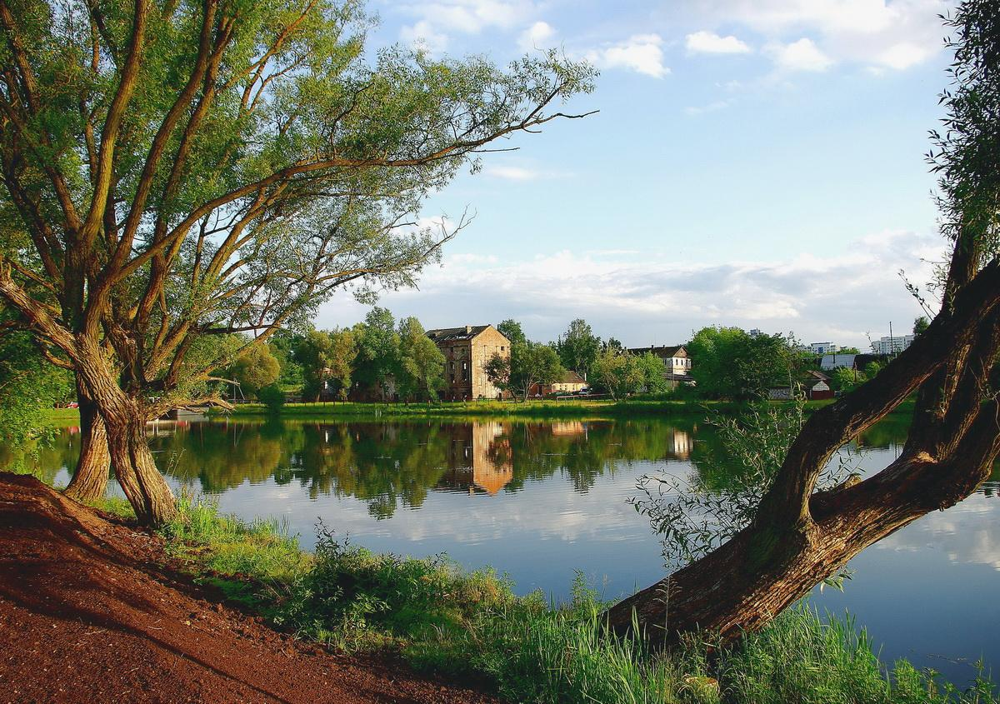
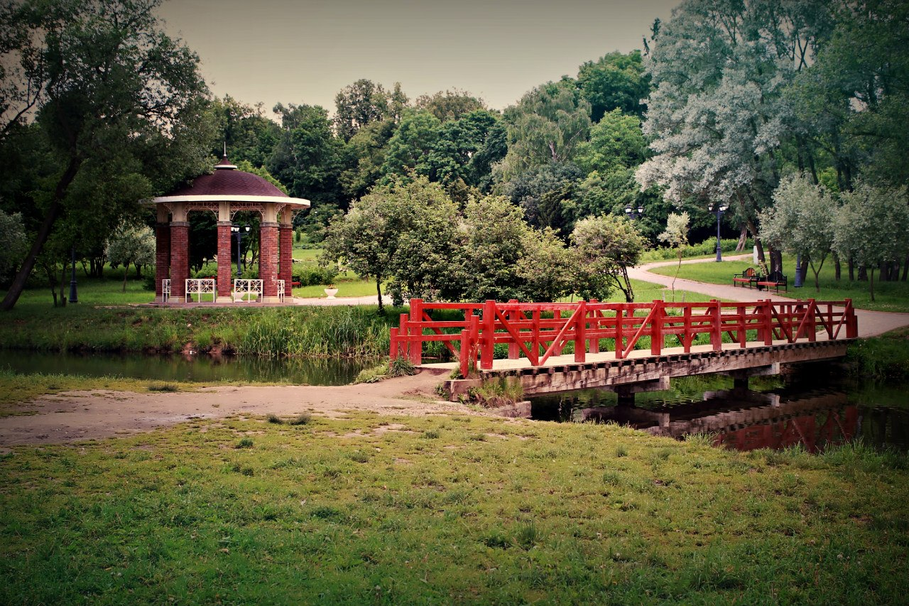
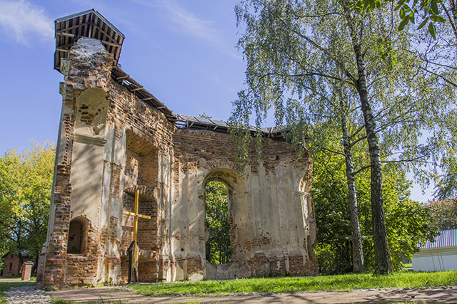
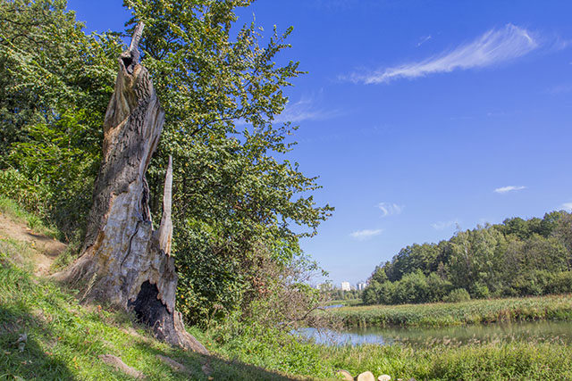

ЛЮДИ
Лошицкий парк.
Тайна семьи Любанских
Ложе – лошадь – Лошица
Откуда пошло название этого, места ходят споры. Одни рассказывают легенду о белой лошади, что спасла во время кровавой битвы раненого Всеслава Чародея. Она привезла князя к роднику, целебная вода которого вернула ему силы. От слова «лошадь» образовалось название реки Лоша или Лошица, а позже так стали именовать усадебно-парковый комплекс. Другие же говорят, что битвы никакой не было. Место, где князь во время путешествия остановился отдохнуть, назвали княжеским ложем, спустя время «ложе» стало созвучным с Лоша или Лошица.
Первое документальное упоминание о лошицкой усадьбе датируется 1557 годом. Тогда ее владельцем был Василий Толочинский из рода князей Друцких. За все время существования у Лошицы сменилось от 12 до 14 владельцев. Это и потомки Всеслава Чародея князья Друцкие-Горские, и князья Радзивиллы, и граф Антоний Прушинский. К слову, графские липы с вековой историей до сих пор можно увидеть на аллее, ведущей к усадьбе.
Подвиги ради любимой
В 1877 году владение по женской линии перешло к Яну Любанскому, а затем хозяином усадьбы стал его сын Евстафий, который превратил её в одно из самых успешных хозяйств Минской губернии.
В 1890 году тридцатисемилетний владелец Лошицы женился на дочери главы мозырской шляхты двадцатилетней Ядвиге Кеневич. Она поставила ему условие: на брак согласится только тогда, когда усадьбу станут считать лучшей в Минской губернии, а вокруг дома будет парк с деревьями разных видов и цветком невиданной красы. Усадьба расцвела в прямом и переносном смысле. Любанский разбил парк по французскому образцу: на каждой полянке был высажен определенный вид растений. Даже сегодня здесь можно увидеть экзотические деревья, не характерные для белорусской земли. Многочисленные саженцы заказывались в разных странах, что обошлось хозяину в приличную сумму. Лиственница, горная и крымская сосна, сибирская и европейская пихта, американская береза, серебристый клен, маньчжурский орех были привезены из разных уголков мира. А удивительным цветком для любимой стала магнолия кобус, которую доставили прямо из Японии. Расцветает она в конце апреля – начале мая, когда еще не появились листья. Увядают бутоны – распускается зелень. Уникальное дерево по своей природе. Говорят, что цветки магнолии появляются в день рождения Ядвиги. Удивительно дерево еще и тем, что из одной лунки растут три ствола. Сегодня ходят споры: сохранилась магнолия со времен Любанского или ее посадили позже?
С именем Евстафия Любанского связывают и реконструкцию усадебного дома, или Белого дома. Специально приглашенный архитектор к торцу одноэтажного деревянного корпуса пристроил новый двухэтажный объем, а с тыльной стороны перед новой двухэтажной частью сделал поднятую на высокий цоколь террасу-веранду. В результате дом приобрел ассиметричную, но очень гармоничную композицию. В доме Евстафий оформил комнаты в разных стилях. Для вестибюля выбрал английский, для коридора – помпейский, для гостиной – рококо, для библиотеки и столовой использовал элементы ренессанса. Не последнюю роль в оформлении интерьера сыграли кафельные печи. Сегодня их называют настоящими шедеврами архитектуры. Немногим современным мастерам под силу создать такие. Рядом с Белым домом был возведен двухэтажный деревянный флигель – Зеленый дом – выполненный в едином стиле с усадебным, сделана ограда из кованых решеток. На месте старой деревянной мельницы в 1901 году была построена каменная трехэтажная, останки которой можно увидеть в глубине парка на берегу реки.
Хозяин имения был не только крупным землевладельцем, но и государственным деятелем. Он избирался в городскую и Государственную думу первого созыва, возглавлял Минскую лесную биржу. В то же время Евстафий Любанский был сторонником эсеров, поддерживал материально тех из них, кто готовил покушение на минского губернатора Курлова.
В усадьбе часто устраивались приемы, дом всегда был полон гостей. Обаятельная хозяйка обращала на себя внимание представителей сильного пола. Среди ее поклонников оказался и один из самых влиятельных аристократов Минской губернии — граф Кароль Эмерик Чапский. Ядвига Любанская ответила ему взаимностью.
В июне 1905 года хозяйка имения праздновала свой 35-летний юбилей. Евстафий сделал свой любимой жене королевский подарок – устроил в ее честь великолепный бал. Среди приглашенных был и граф Эмерик Чапский, который недавно вернулся из заграничной командировки. Во время бала влюбленные встретились после долгой разлуки. Именно в этот момент и увидел Любанский свою жену в объятьях графа. Разыгралась семейная драма… А утром именинница куда-то исчезла. Когда маленькие собачки, всегда сопровождавшие хозяйку, принесли ее шляпку, то Евстафий, почувствовав неладное, бросился на поиски жены. Предчувствие беды было не напрасным.
Есть предположение, что Любанская была ветреной дамой, имевшей немало поклонников. Но после случая с графом Чапским она не вынесла позора и покончила жизнь самоубийством. Другие же говорят, что с пани произошел несчастный случай: перевернулась лодка, а Ядвига плавать не умела… Некоторые связывают имя Ядвиги с Павлом Курловым, минским губернатором, занявшим этот пост осенью 1905 года. Возможно Евстафий Любанский по личным мотивам помогал эсерам в 1906 году готовить покушение на Курлова. Вариантов легенды множество.
Версий гибели хозяйки имения множество. Версию о романтических отношениях Ядвиги и Кароля Эмерика Чапского изложил историк Николай Богодяж. Однако она избавлена исторической достоверности. Брат Ядвиги Антоний утверждает, что его сестра была больна и часто теряла сознание. Когда ее нашли, то она лежала в воде возле самого берега, уткнувшись лицом в дно. Но он же утверждает, ссылаясь на свидетельства Янины и Марии Чапских, что привести к самоубийству мог роман с Ядвиги с минским губернатором А.Н.Мусиным-Пушкиным: после перевода его из Минска в Петербург Ядвига якобы долго переживала разлуку и утопилась в Свислочи.
На похороны пришли не только местная шляхта, но и много нищих и бедных людей. Они заполонили весь Лошицкий парк. И это было не случайно: помимо внешней привлекательности Ядвига имела доброе сердце и помогала обездоленным людям. На свои средства она содержала в Минске дом для престарелых и бездомных людей, куда ежедневно из имения доставляли свежее молоко и продукты, лекарственные растения. Ядвига Любанская входила также в состав совета Благотворительного общества Минской губернии, председателем которого был граф Кароль Эмерик Чапский. Она же возглавляла «дамское отделение» губернского комитета «Общества попечительного о тюрьмах».
Евстафий очень сильно страдал от происшедшего. Часто его можно было увидеть на месте трагической гибели жены. Убитый горем муж приказал возле места трагедии посадить две вербы. В знак глубокой скорби о Ядвиге и несбывшемся личном семейном счастье, Евстафий приказал заложить кирпичом окно ее комнаты на первом этаже Белого дома. В таком необычном виде оно сохранилось до наших дней. Но есть и другая версия появления этой кладки. Якобы хозяйка любила наблюдать из этого окна за местной молодежью, что очень раздражало Любанского.
Возле места гибели Ядвиги растет абрикос маньчжурский (единственный в старых парках Беларуси). Весной, когда дерево расцветает, оно напоминает собой огромный розовый букет. Говорят, что именно в пору его цветения и летом перед Купальем лунными ночами в парке появляется привидение. Весенними ночами к влюбленным выходит призрак Ядвиги – отчетливый силуэт дамы в белых одеждах. Самым смелым она предсказывает судьбу и помогает дельными советами. Бывший замдиректора Лошицкого дворцово-паркового хозяйства Евгений Григорьевич Терехов утверждал, что собственными глазами видел Белую Панну.
В скором времени после трагических событий вдовец, оказавшись на грани разорения, покинул Лошицу. Через несколько лет он умер где-то на Кавказе. Последним владельцем усадьбы стал его брат Александр.
После революции парк находился в запустении. В 20-е годы XX века на территории Лошицкого парка по инициативе Николая Вавилова создали белорусское отделение Всесоюзного института растениеводства. К слову, практически все сорта злаковых, которые выращивают в Беларуси, вывел этот ученый-селекционер. Позднее институт переехал, и Лошица осталась бесхозной.
С июля по ноябрь 1944 года в Лошице размещался штаб партизанского движения Беларуси.
С 1946 по 1947 года в Лошицком усадебном доме находилась штаб-квартира Гуманитарной миссии ЮНРРА. Это была созданная при ООН организация для оказания материальной помощи странам, пострадавшим во время второй мировой войны. ЮНРРА поставляла в БССР – продукты, медикаменты, одежду, семена, сельскохозяйственное и промышленное оборудование. Общая сумма помощи составила 61 млн. долларов. На Военном кладбище по ул. Козлова похоронена молодая сотрудница миссии Рут С. Уоллер, уроженка Калифорнии.
С 1987 года Лошицкое имение стало выполнять функцию отдела Национального художественного музея Республики Беларуси, но денег на реставрацию не нашлось. Сегодня в Лошицком парке хозяйничает «Минскзеленстрой». Изменения заметны: построен детский городок, восстановлен домик привратника, с помощью Музея истории города Минска в былом флигеле открыт музей… И самое главное – скоро усадьба Любанского возвратится к жизни, ее двери откроются перед любопытными туристами и жителями столицы. Уже закончено воссоздание интерьеров в стиле XVIII–XIX веков, над которыми работал целый штат реставраторов. Осталось только преобразить внешний облик здания.
История каплицы
Недалеко от главной аллеи сохранилась стена римско-католической каплицы. Она была возведена еще при Прушинских в XVII веке. В подземелье восьмигранного здания хоронили владельцев Лошицы. Последней тут была погребена Ядвига Любанская. В 1935 году каплицу взорвали. Железные элементы постройки и даже свинцовый гроб с останками Ядвиги переплавили для изготовления аккумуляторов. Где сегодня находятся останки умерших, захороненных в подземелье каплицы, неизвестно.
История обручального дуба
На берегу Свислочи стоял величественный дуб. Он стал настоящей достопримечательностью Лошицкого парка. По легенде, у одного из князей Друцких-Горских было три дочери. Для каждой он посадил по дереву, символизирующему крепость семьи, любовь, удачу. До нашего времени сохранился только один дуб, который стали называть обручальным. В XX веке незамужние девушки кланялись ему и просили счастливой семейной жизни. Говорят, что дуб исполнял их желания. В 2010 году великан погиб от удара молнии, но люди до сих пор верят в его волшебную силу: просят здоровья, вдохновения, удачного брака.
